The phonR package provides functions for vowel formant frequency and \(f_0\) normalization, as well as a vowel plotting function plotVowels with many advanced features. There are also a few functions for calculating the area of the vowel space (either as a convex polygonal hull or a polygon connecting the mean values of the vowels), and for calculating the repulsive force of the vowel system. phonR also includes sample data in the form of F1 and F2 measurements for eight speakers of Standard Indonesian.
phonR is available through the Comprehensive R Archive Network and can be installed from within R using install.packages("phonR"). The current version available on CRAN is version 1.0.3. The source code is hosted on GitHub so the development version of the package is also available via devtools::install_github("drammock/phonR"). This tutorial vignette is built with the most current development version, which is 1.0.6. The development version may include bugfixes or minor features not present in the CRAN version. If you think you have found a bug, please install and test with the development version first by running devtools::install_github("drammock/phonR"), as your bug may have already been fixed. You can always go back to the CRAN version by running the standard install.packages("phonR") later.
phonR is licensed under GPL-3, and has three dependencies: deldir (for Delaunay triangulations), plotrix (for creating color scales), and splancs (for point-in-polygon functions). Plotting vowels with non-ASCII characters (i.e., most vowel symbols in the International Phonetic Alphabet) also requires that the user’s computer have a typeface installed that contains glyphs at the necessary codepoints, and that the user specify that typeface when calling the plotVowels function.
To run the examples in this tutorial yourself, you need to load phonR and the accompanying sample data:
library(phonR)
data(indoVowels) # provides dataframe 'indo'All the examples make use of R’s with() syntax. If you’ve never used with, the short explanation is it allows you to access the columns of a dataframe without the $ operator. So instead of plotVowels(indo$f1, indo$f2) you can say with(indo, plotVowels(f1, f2)). It functions similar to providing a data argument in functions like lm or older versions of plotVowels.
The 1.0 release of phonR was a major update that included dramatically expanded functionality and changes to the API. Unfortunately this means a couple of features were sacrificed, and some of the argument names have changed. For example, there is no longer a data argument to the plotVowels function, but comparable simplicity can be had by using the with syntax built into R (as described above, and as will be demonstrated throughout this tutorial).
Older versions of plotVowels also had built-in support for multiple figures with identical axis ranges via the arguments single.plot=FALSE and match.axes="absolute" (useful when comparing vowels from different speakers or groups, in cases where plotting all speakers/groups on the same graph is untenable). This is still possible but is now achieved using base R multi-plot layout commands such as par(mfrow=c(2, 2)) and standard axis limit arguments xlim and ylim.
Finally, the ability of the plotVowels function to do on-the-fly normalization has been removed, and with it the ability to draw axes with tick marks corresponding to evenly-spaced Hertz values (rendered as unevenly spaced in the units of the plot). The rationale for removing these capabilities is that (1) it is not burdensome to have to normalize formant frequencies prior to plotting, and (2) the “Bark-transformed Hertz” style of axis annotation was handy as a teaching tool but not obviously useful when generating plots for publication. Users who still require this functionality are encouraged to read about R’s axis function and its at argument; you can pass the axes=FALSE argument to plotVowels and draw the axes yourself.
phonR implements eight different vowel formant frequency normalization function algorithms as separate functions, and additionally provides a convenience function normalizeVowels that wraps to the individual functions, specified by a method argument. The algorithms implemented are listed in Table 1. Most of the normalization functions accept a vector or matrix of \(f_0\) or formant frequencies, and return a vector or matrix of the same dimensions. In the table below, \(\mu()\) is the mean function, \(F\) is the \(f_0\) or formant value in Hertz, \(F_n\) indicates that the equation applies to \(f_0\) and to each formant separately, and \(F1_v\) and \(F2_v\) indicate that the formant values for each vowel are treated separately.
| Normalization method | Function name | Source | Formula |
|---|---|---|---|
| Bark | normBark |
(Traunmüller, 1990) | \[ \frac {26.81 \times F}{1960+F} - 0.53 \] |
| Equivalent Rectangular Bandwidth (ERB) | normErb |
(Glasberg & Moore, 1990) | \[ 21.4 \times \log_{10} (1 + F \times 0.00437) \] |
| Mel | normMel |
(Stevens & Volkmann, 1940) | \[ 2595 \times \log_{10} (1 + \frac{F}{700}) \] |
| Log | normLog |
n/a | \[ \log_{10}(F) \] |
| Lobanov (z‑score) | normLobanov |
(Lobanov, 1971) | \[ \frac{F_n - \mu(F_n)}{\sigma(F_n)} \] |
| Watt-Fabricius (s‑centroid) | normWattFabricius |
(Watt & Fabricius, 2002) | \[ \langle \frac{2 \times F2}{\min(\mu(F2_v)) + \max(\mu(F2_v))}, \frac{3 \times F1}{2 \times \min(\mu(F1_v)) + \max(\mu(F1_v))} \rangle \] |
| Nearey‑1 (logmean) | normLogmean, normNearey1 |
(Nearey, 1977) | \[ \log_{e} (F_n) - \mu(\log_{e}(F_n)) \] |
| Nearey‑2 (shared logmean) | normSharedLogmean, normNearey2 |
(Nearey, 1977) | \[ \log_{e} (F) - \mu(\log_{e}(F)) \] |
Note that in phonR, the “centroid” for Watt-Fabricius normalization is defined as the point \(\langle \frac{\min(\mu(F2_v)) + \max(\mu(F2_v))}{2}, \frac{2 \times \min(\mu(F1_v)) + \max(\mu(F1_v))}{3} \rangle\). This varies slightly from the original formula (Watt & Fabricius, 2002), since the phonR implementation simply calculates which vowel has the highest mean F1 value and designates it as low corner of the triangle, rather than asking the user to expressly specify the trap or start vowel. Similarly, the phonR implementation simply calculates which vowel has the highest mean F2 value and uses that to calculate the upper left corner, rather than expressly looking for the mean of the “point-vowel” /i/. The upper right corner is, as in the original method, derived from the other two corners.
The area of the vowel space can be calculated either as the area of the convex hull encompassing all vowel tokens, or as the area of the polygon defined by the mean values for each vowel. An optional group argument allows each function to be applied separately to subsets of the data based on a grouping factor (such as subject, gender, speech register, phonetic environment, etc). The vowelMeansPolygonArea function also requires an argument poly.order that specifies in which order the means should be connected. Vowels present in the data but not included in poly.order will be ignored for the purposes of defining the polygon; this is useful for ignoring mid-central vowels, vowels that are part of long/short pairs, etc.
poly.area <- with(indo, vowelMeansPolygonArea(f1, f2, vowel, poly.order = c("i",
"e", "a", "o", "u"), group = subj))
hull.area <- with(indo, convexHullArea(f1, f2, group = subj))
rbind(poly.area, hull.area)
#> F02 F04 F08 F09 M01 M02 M03 M04
#> poly.area 485051.4 337364.0 434816 302064.9 197746.1 229501.7 215713.3 177131.1
#> hull.area 1254575.0 866109.5 1020835 751327.0 517212.5 666246.0 477518.5 568364.0plotVowels functionThe plotVowels function has been developed to be maximally compatible with the base R function plot, so that many familiar function arguments and graphical parameters can be passed to plotVowels and work as expected. Arguments like family for specifying font family, xlab, ylab, main and sub for axis annotation and titles, or xlim and ylim for specifying axis bounds are all respected. Other arguments applicable to direct-to-file plotting are also respected (e.g., filename, width, height, res, units, etc). Finally, just as with the base plot function, arguments specific to the individual components of the plot such as cex.main, col.axis, or font.main are available to specify the size, color, and font style of titles, axes, and axis labels.
Using the included indo vowel data, the default behavior of plotVowels is not much different from a standard plot command, with the exception that the axis directions are reversed (as is standard practice in linguistics).
with(indo, plotVowels(f1, f2))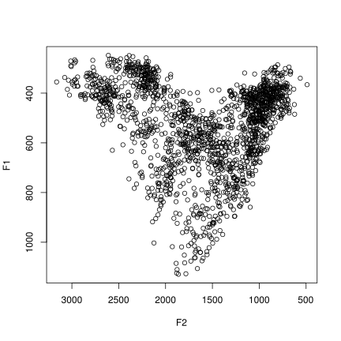
Of course, there is little point in plotting all the vowels with the same symbol, and without further information, plotVowels doesn’t know which F1 and F2 values belong to which vowel and which talker or group. It also doesn’t know how you want them plotted, which is why the next plot looks just like the previous one: even though we have semantically distinguished the data points by telling plotVowels which formant values belong to which vowel / talker, we haven’t specified any way of visually distinguishing the points on the plot.
with(indo, plotVowels(f1, f2, vowel = vowel, group = gender))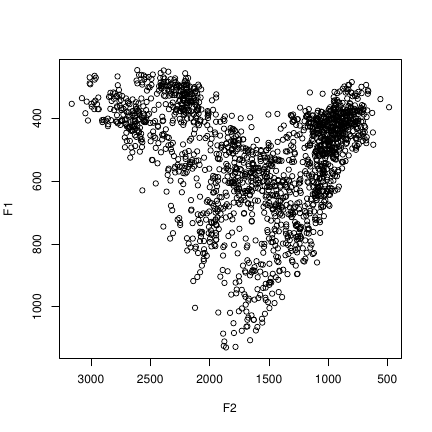
vowel, group, var.col.by and var.style.byThe next plot solves this problem by specifying various ways to assign colors and styles to the plot, using the var.col.by and var.style.by arguments. On the top left, both color and symbol redundantly encode vowel identity. On the top right, color encodes the gender of the talker, and symbol type again encodes vowel identity. On the bottom left, color varies by talker and symbol varies by gender; on the bottom right, color varies by whether the vowel is rounded or not, and symbol varies by talker.
par(mfrow = c(2, 2))
rounded <- ifelse(indo$vowel %in% c("o", "u"), "round", "unround")
with(indo, plotVowels(f1, f2, var.style.by = vowel, var.col.by = vowel))
with(indo, plotVowels(f1, f2, var.style.by = vowel, var.col.by = gender))
with(indo, plotVowels(f1, f2, var.style.by = gender, var.col.by = subj))
with(indo, plotVowels(f1, f2, var.style.by = subj, var.col.by = rounded))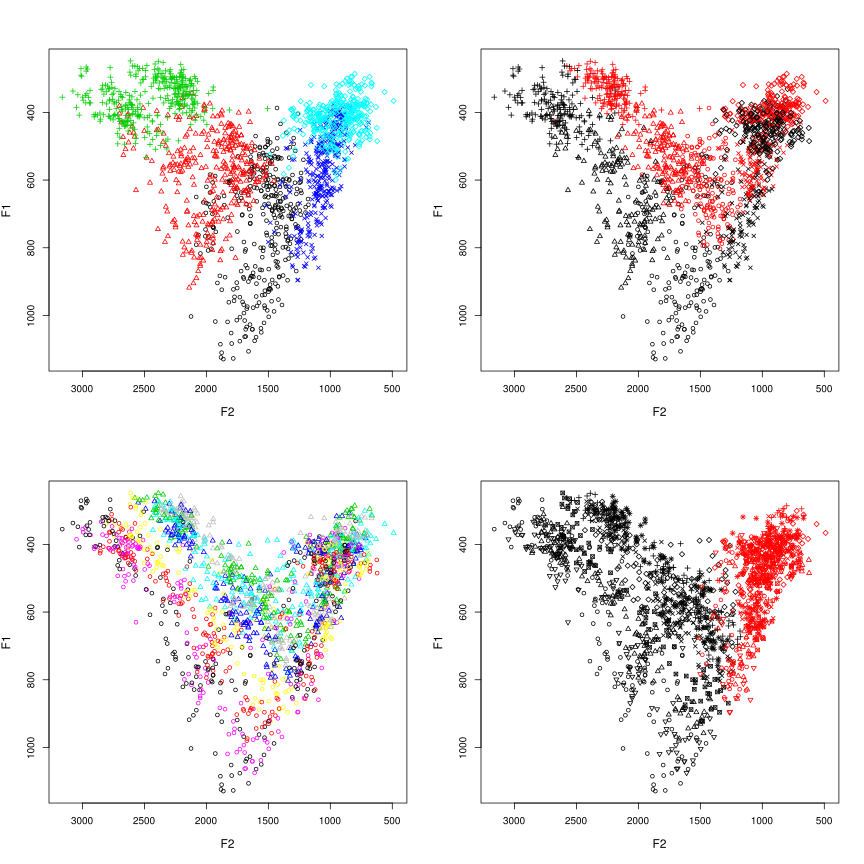
Notice that in none of these plots are we making use of the vowel and group arguments; as we will see later, these are used for the calculation of vowel means and the drawing of ellipses and polygons based on those calculations. It is important to remember that the vowel and group arguments are functionally independent from the way plotVowels controls color and style (viz. var.col.by and var.style.by).
Another important aspect of var.col.by and var.style.by is the ability to override their function by passing them the value NA. One reason you might want this is if you want color to represent some other dimension of each data point, such as vowel length or repulsive force. In such cases, you can pre-calculate the color that you want for each vowel (e.g., with the plotrix::color.scale function) and pass the vector of color values to plotVowels as the col argument. When doing this, you must also pass var.col.by=NA, otherwise the default behavior of plotVowels (when var.col.by=NULL) is to assume that you don’t want to vary color at all, and it will apply the first value of col to all the data points and ignore the rest of col (note that var.col.by=NA also affects the interpretation of col arguments passed as part of ellipse.args, hull.args, and poly.args in the same way). To demonstrate this, the plots below vary color smoothly based on F2 values (left) or distance from the centroid of the vowel space (right):
par(mfrow = c(1, 2))
f2col <- plotrix::color.scale(indo$f2, cs1 = c(180, 0), cs2 = 100, cs3 = 60, color.spec = "hcl")
pts <- with(indo, cbind(f2, f1))
cdist <- apply(pts, 1, function(i) dist(rbind(i, colMeans(pts))))
cdistcol <- plotrix::color.scale(cdist, cs1 = c(180, 360), cs2 = 100, cs3 = 60, color.spec = "hcl")
with(indo, plotVowels(f1, f2, var.col.by = NA, col = f2col))
with(indo, plotVowels(f1, f2, var.col.by = NA, col = cdistcol))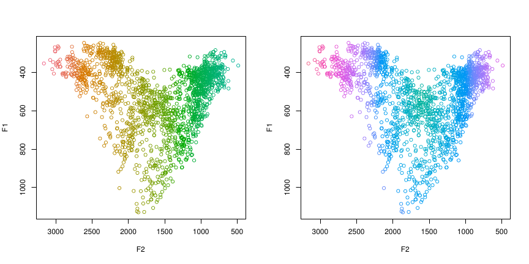
pretty argumentBy now you will have noticed that the default colors and symbols are ugly, and the axes are on the wrong sides of the plot (from a phonetician’s perspective, anyway). plotVowels has a wonderful argument called pretty that sets a whole bunch of default color and style options all at once, as a shortcut to getting plots that are easy on the eyes. Here are the four plots used above to introduce var.col.by and var.style.by, but this time they are pretty:
par(mfrow = c(2, 2))
with(indo, plotVowels(f1, f2, var.style.by = vowel, var.col.by = vowel, pretty = TRUE))
with(indo, plotVowels(f1, f2, var.style.by = vowel, var.col.by = gender, pretty = TRUE))
with(indo, plotVowels(f1, f2, var.style.by = gender, var.col.by = subj, pretty = TRUE))
with(indo, plotVowels(f1, f2, var.style.by = subj, var.col.by = rounded, pretty = TRUE))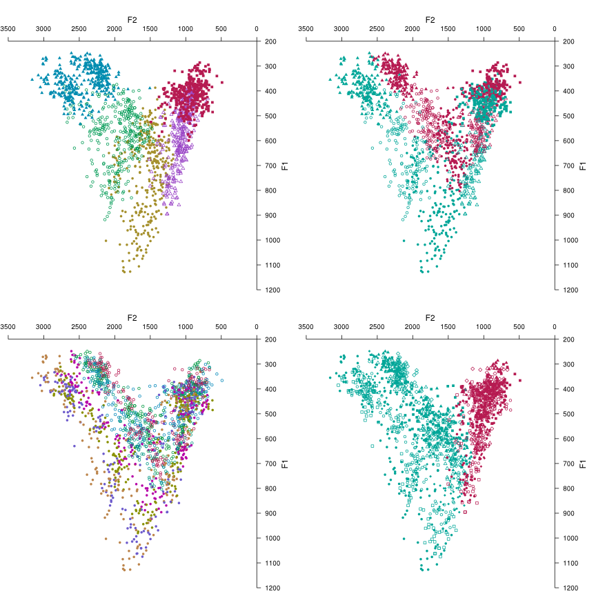
Don’t worry if you don’t love the colors, or want different symbols or a different symbol size: anything that pretty changes can be overridden by explicitly including extra graphical parameters as arguments in the plotVowels function call, while leaving the remaining pretty options in place. The only thing you can’t undo is the axis placement on the top and right instead of bottom and left — that one is hard-wired (though you can pass the axes=FALSE argument to suppress them). We’ll be leaving pretty=TRUE from now on, so you’ll see how it affects other aspects of the plots as we proceed.
As we have seen, the default for plotVowels is to plot each individual vowel token, potentially colored and styled in different ways. But sometimes a summary view is helpful to look at group differences. This is easily achieved by turning off the plot.tokens argument (which defaults to TRUE) and turning on the plot.means argument (which defaults to FALSE). Now that we’re calculating means for each vowel, the vowel and group arguments become important. These next two plots show the mean F1 and F2 values for each vowel, but with different grouping factors: on the left, the mean for each vowel is calculated within-speaker; on the right, the means are calculated within gender groups.
par(mfrow = c(1, 2))
with(indo, plotVowels(f1, f2, vowel, group = subj, plot.tokens = FALSE, plot.means = TRUE,
var.col.by = gender, var.style.by = vowel, pretty = TRUE, xlim = c(2900, 600),
ylim = c(1000, 250)))
with(indo, plotVowels(f1, f2, vowel, group = gender, plot.tokens = FALSE, plot.means = TRUE,
var.col.by = gender, var.style.by = vowel, pretty = TRUE, xlim = c(2900, 600),
ylim = c(1000, 250)))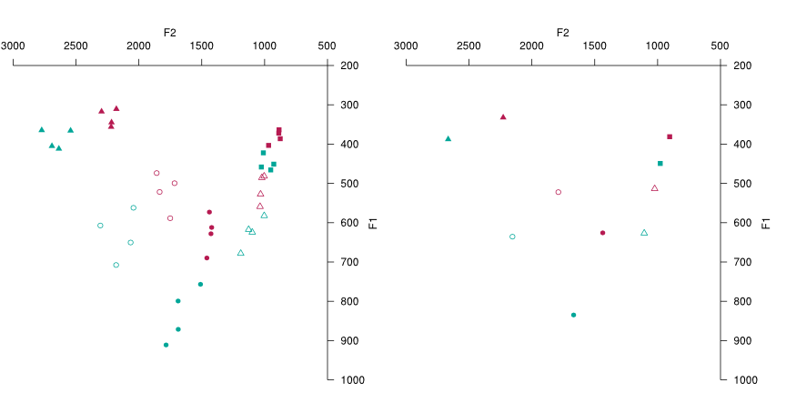
plotVowels allows you to replace the plotting symbols with arbitrary text, including non-ASCII characters such as IPA glyphs. This can be done separately for the vowel tokens and vowel means using the pch.tokens and pch.means arguments; we can also control the size separately too using cex.tokens and cex.means. The vowels of Standard Indonesian in the example data are all transcribed with ASCII characters, so to demonstrate the IPA symbols we’ll add some unnecessary extra symbols and diacritics to plot the means. While we’re at it, we’ll make the tokens smaller and semi-transparent and specify the font family (you can use any typeface that has the glyphs you need and is installed on your system).
# unicode escapes are necessary for this example to work on Windows
remapping <- c(i = "ɪʏ̯", e = "ɛœ̰ɚ", a = "ɒɐ˞", o = "ɤɞ̆", u = "ɯʊ̥")
indo$unicodevowel <- remapping[as.character(indo$vowel)]
with(indo, plotVowels(f1, f2, unicodevowel, plot.tokens = TRUE, pch.tokens = vowel,
cex.tokens = 1.2, alpha.tokens = 0.4, plot.means = TRUE, pch.means = unicodevowel,
cex.means = 4, var.col.by = unicodevowel, family = "Charis SIL", pretty = TRUE))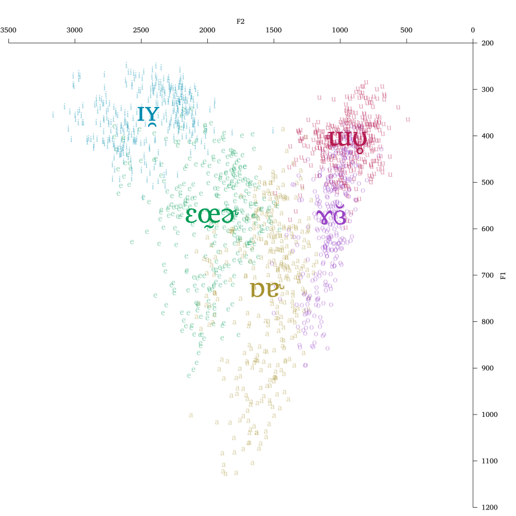
Notice that the glyphs used to plot the tokens and means need not be the same, and that labels are not restricted to a single glyph (making it easy to symbolize diphthongs, consonantal context, or even use entire words as labels).
An important note here is that using non-ASCII symbols in R can be somewhat challenging when using R in Microsoft Windows, particularly when using Microsoft Excel to organize and store the data. See the Appendix for advice on how to minimize problems when dealing with non-ASCII glyphs on computers running Windows.
Although seeing the cloud of individual tokens for each vowel is sometimes informative, the plot may become hard to read if there is too much overlap (e.g., due to plotting several different talkers on the same graph). The ability to specify alpha.tokens mitigates this to some extent, but in some cases even this is not enough and the plot becomes unreadable. In such cases, ellipses summarizing the range of variation of each vowel can provide a convenient summary of the underlying data with less visual clutter. The next plot shows (in the top row) two plots showing the effect of the ellipse.conf argument. The default is ellipse.conf=0.6827, which is a confidence level corresponding to ±1 standard deviation from the bivariate mean. The upper right-hand plot shows ellipse.conf=0.95, which gives 95% confidence ellipses. The individual tokens are left visible to show their relationship with the ellipse extents. The bottom row shows how ellipses can be drawn as lines, fills, or both; how plotting ellipses interacts with the group argument; how the var.style.by argument affects the ellipse lines; and the utility of reducing the fill.opacity argument when lots of filled objects overlap.
par(mfrow = c(2, 2))
with(indo, plotVowels(f1, f2, vowel, plot.tokens = TRUE, pch.tokens = vowel, cex.tokens = 1.2,
alpha.tokens = 0.2, plot.means = TRUE, pch.means = vowel, cex.means = 2, var.col.by = vowel,
ellipse.line = TRUE, pretty = TRUE))
with(indo, plotVowels(f1, f2, vowel, plot.tokens = TRUE, pch.tokens = vowel, cex.tokens = 1.2,
alpha.tokens = 0.2, plot.means = TRUE, pch.means = vowel, cex.means = 2, var.col.by = vowel,
ellipse.line = TRUE, ellipse.conf = 0.95, pretty = TRUE))
with(indo, plotVowels(f1, f2, vowel, group = gender, plot.tokens = FALSE, plot.means = TRUE,
pch.means = vowel, cex.means = 2, var.col.by = vowel, ellipse.fill = TRUE, pretty = TRUE))
with(indo, plotVowels(f1, f2, vowel, group = subj, plot.tokens = FALSE, plot.means = TRUE,
pch.means = vowel, cex.means = 2, var.col.by = vowel, var.style.by = subj, ellipse.line = TRUE,
ellipse.fill = TRUE, fill.opacity = 0.1, pretty = TRUE))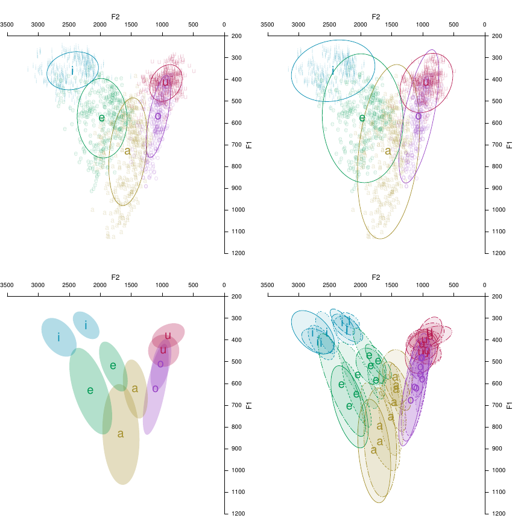
In the lower-left plot above, we know from the function call that the two sets of ellipses correspond to talker gender, but it is not clear which ellipses “go together” (especially in the high back region). We can regain this information by passing arguments ellipse.line=TRUE, var.style.by=gender or by adding a legend, but we can achieve the same thing by drawing connecting lines between the vowel means. We’ll omit the low vowel for demonstration purposes; the ability to omit certain vowels from the polygon is useful for vowel systems with pairs (short/long, oral/nasal, etc) or if the plot includes central vowels and you only want to connect the peripheral vowels.
with(indo, plotVowels(f1, f2, vowel, group = gender, plot.tokens = FALSE, plot.means = TRUE,
pch.means = vowel, cex.means = 2, var.col.by = vowel, var.style.by = gender,
ellipse.fill = TRUE, poly.line = TRUE, poly.order = c("i", "e", "o", "u"), pretty = TRUE))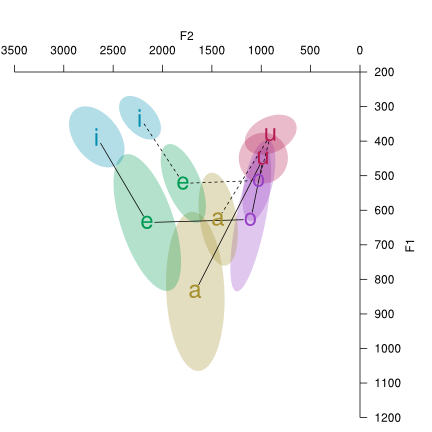
The vowel polygon lines above (and also convex hulls, seen below) are drawn in black color if the var.col.by argument is vowel (because the polygonal boundary line is a property of the entire vowel space, not of any one vowel). If var.col.by is something else (like gender or talker) then the polygonal or hull line follows the color coding of the tokens and means. Just like ellipses (and hulls), vowel polygons may also have lines, fills, or both (controlled by the boolean poly.line and poly.fill arguments).
par(mfrow = c(1, 2))
with(indo, plotVowels(f1, f2, vowel, group = gender, pch.tokens = vowel, cex.tokens = 1.2,
alpha.tokens = 0.3, plot.means = TRUE, pch.means = vowel, cex.means = 2, var.col.by = vowel,
var.style.by = gender, hull.fill = TRUE, hull.line = TRUE, fill.opacity = 0.1,
pretty = TRUE))
with(indo, plotVowels(f1, f2, vowel, group = gender, pch.tokens = vowel, cex.tokens = 1.2,
alpha.tokens = 0.3, plot.means = TRUE, pch.means = vowel, cex.means = 2, var.col.by = gender,
var.style.by = gender, hull.fill = TRUE, hull.line = TRUE, fill.opacity = 0.1,
pretty = TRUE))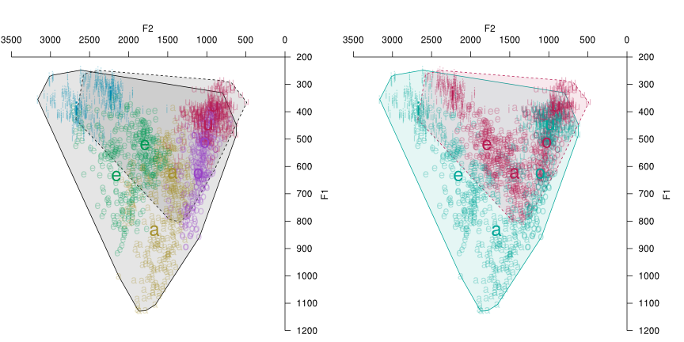
One of the more unique aspects of phonR is its ability to calculate and plot the repulsive force of a vowel space. The next plot shows vowels color-coded by their repulsive force (i.e., the degree of encroachment or overlap between vowel categories), and a heatmap of the same information using the same color scale.
force <- with(indo, repulsiveForce(f2, f1, vowel))
force.col <- plotrix::color.scale(force, cs1 = c(150, 330), cs2 = c(25, 75), cs3 = c(60,
90), color.spec = "hcl")
coolcolors <- plotrix::color.scale(x = 0:100, cs1 = c(150, 330), cs2 = c(25, 75),
cs3 = c(60, 90), color.spec = "hcl")
par(mfrow = c(1, 2))
with(indo, plotVowels(f1, f2, vowel, pch.tokens = vowel, col = force.col, var.col.by = NA,
pretty = TRUE))
with(indo, plotVowels(f1, f2, vowel, plot.tokens = FALSE, heatmap = TRUE, heatmap.args = list(colormap = coolcolors,
resolution = 10, useRaster = TRUE), heatmap.legend = TRUE, pretty = TRUE))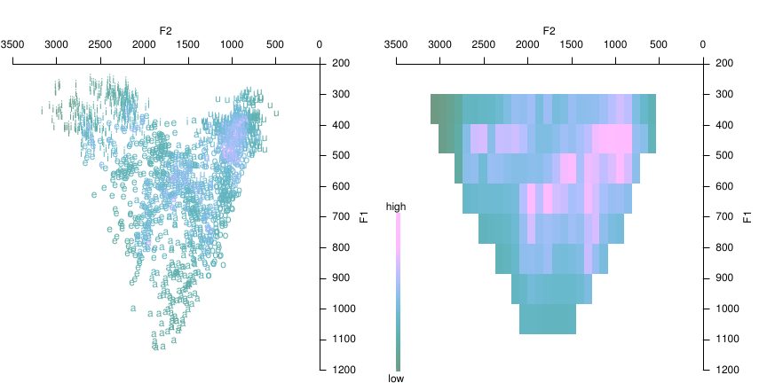
The resolution of the heatmap is controlled by the resolution argument, which must be passed as part of the named list heatmap.args. The colormap used to draw the heatmap defaults to grayscale if pretty=FALSE or to a cool palette if pretty=TRUE, but can be specified by passing a vector of color values as the colormap element of heatmap.args. There is also a boolean argument heatmap.legend that can be used to create a colorbar showing the range of possible values, and a named list argument heatmap.legend.args for controlling its appearance.
The plots below use just one speaker’s vowels to illustrate the effect of increasing resolution. Values shown are 20, 40, and 60, with the actual vowel tokens plotted with a force color-code (as above) for comparison.
par(mfrow = c(2, 2))
female2 <- indo[indo$subj %in% "F02", ]
# we need to recalculate the force and the colormap since we subsetted to a
# single talker's vowels
force <- with(female2, repulsiveForce(f2, f1, vowel))
force.col <- plotrix::color.scale(force, cs1 = c(150, 330), cs2 = c(25, 75), cs3 = c(60,
90), color.spec = "hcl")
with(female2, plotVowels(f1, f2, vowel, pch.tokens = vowel, cex.tokens = 1.2, col = force.col,
var.col.by = NA, pretty = TRUE))
for (res in c(20, 40, 60)) {
with(female2, plotVowels(f1, f2, vowel, plot.tokens = FALSE, heatmap = TRUE,
heatmap.args = list(colormap = coolcolors, resolution = res, useRaster = TRUE),
pretty = TRUE))
}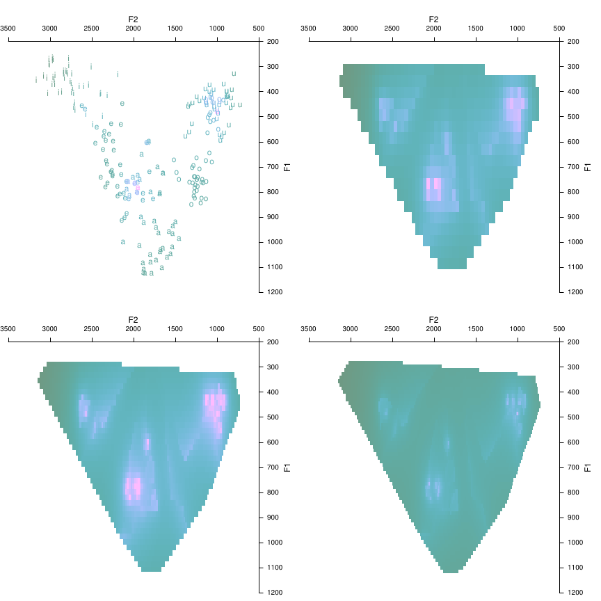
These plots show that there can be a sort of “sweet spot” when choosing resolution, that makes the force characteristics of the vowel space most readily visible: making the resolution too high shrinks the size of the pixels and thereby makes the regions of high force smaller and harder to see.
In theory, resolution can go as high as you want, but the heatmaps are somewhat computationally expensive to generate so it is often best to keep the resolution low during “exploratory” plotting, and only increase the resolution when you are ready to generate plots for use in finished documents. Alternatively, you can pass fast=TRUE as part of the heatmap.args list, which will use an interpolation algorithm to assign force values to the pixels, rather than calculating the actual force value at that pixel as if there had been a vowel there.
par(mfrow = c(1, 2))
for (speed in c(TRUE, FALSE)) {
time.st <- Sys.time()
with(female2, plotVowels(f1, f2, vowel, plot.tokens = FALSE, heatmap = TRUE,
heatmap.args = list(colormap = coolcolors, resolution = 50, fast = speed,
useRaster = TRUE), pretty = TRUE))
time.nd <- Sys.time()
title(main = paste("This plot took", round(time.nd - time.st, 1), "seconds"),
line = 3, adj = 0)
}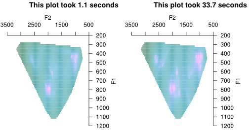
In most cases, legends can be added automatically to plots created using plotVowels by adding a legend location keyword such as legend.kwd="bottomleft" (see the documentation of graphics::legend for explanation of the keywords). Great care has been taken to ensure that the legends display all (and only) the necessary color and style contrasts in the plot. Here we repeat four of the plots seen above, with legends added:
par(mfrow = c(2, 2))
with(indo, plotVowels(f1, f2, var.style.by = gender, var.col.by = subj, pretty = TRUE,
legend.kwd = "bottomright"))
with(indo, plotVowels(f1, f2, vowel, plot.tokens = TRUE, pch.tokens = vowel, cex.tokens = 1.2,
alpha.tokens = 0.4, plot.means = TRUE, pch.means = unicodevowel, cex.means = 4,
var.col.by = unicodevowel, family = "Charis SIL", pretty = TRUE, legend.kwd = "bottomright"))
with(indo, plotVowels(f1, f2, vowel, group = gender, pch.tokens = vowel, cex.tokens = 1.2,
alpha.tokens = 0.3, plot.means = TRUE, pch.means = vowel, cex.means = 2, var.col.by = vowel,
var.style.by = gender, hull.fill = TRUE, hull.line = TRUE, fill.opacity = 0.1,
pretty = TRUE, legend.kwd = "bottomright"))
with(indo, plotVowels(f1, f2, vowel, group = subj, plot.tokens = FALSE, plot.means = TRUE,
pch.means = vowel, cex.means = 2, var.col.by = vowel, var.style.by = subj, ellipse.line = TRUE,
ellipse.fill = TRUE, fill.opacity = 0.1, pretty = TRUE, legend.kwd = "bottomright"))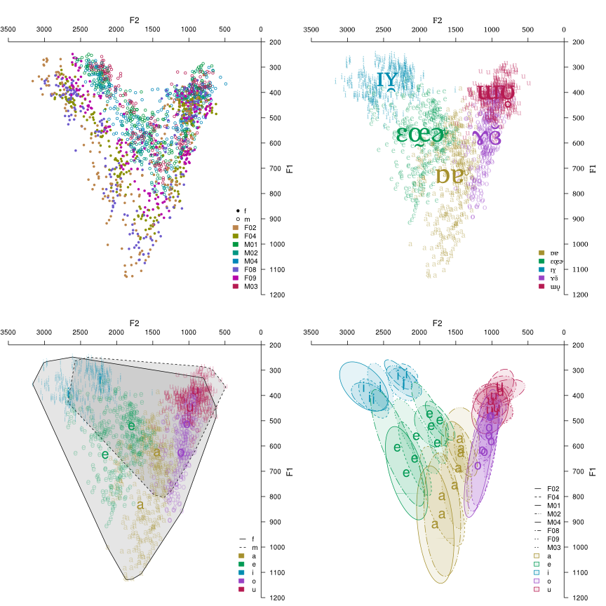
Note that the text in the legends is taken from the arguments var.col.by and var.style.by, so in the upper-right plot above, the legend shows the unicodevowel strings instead of the vowel strings. It is possible to override these strings using the legend.args argument, for example: legend.args=list(legend=c("foo", "bar", "baz", "etc", "etc")). The elements of legend.args are passed to legend and can be used to further customize the legend by specifying seg.len, inset, etc. See ?legend for further details.
Vowels are not instantaneous phenomena, and all phoneticians know that vowel formants are usually not stationary over time. To accommodate this, plotVowels allows you to supply f1 and f2 arguments as matrices where the values across a given row are the measurements at different timepoints for the same vowel. The timepoints for the vowels are connected with line segments, and you can add arrowheads to the last segment via the diph.arrows argument. Controlling the style of the diphthong lines is achieved through the diph.args.tokens and diph.args.means arguments, which take named lists of graphical parameters.
# simulate some diphthongs; not terribly realistic values
f1delta <- sample(c(-10:-5, 5:15), nrow(indo), replace = TRUE)
f2delta <- sample(c(-15:-10, 20:30), nrow(indo), replace = TRUE)
f1coefs <- matrix(sample(c(2:5), nrow(indo) * 4, replace = TRUE), nrow = nrow(indo))
f2coefs <- matrix(sample(c(3:6), nrow(indo) * 4, replace = TRUE), nrow = nrow(indo))
indo <- within(indo, {
f1a <- f1 + f1delta * f1coefs[, 1]
f2a <- f2 + f2delta * f2coefs[, 1]
f1b <- f1a + f1delta * f1coefs[, 2]
f2b <- f2a + f2delta * f2coefs[, 2]
f1c <- f1b + f1delta * f1coefs[, 3]
f2c <- f2b + f2delta * f2coefs[, 3]
f1d <- f1c + f1delta * f1coefs[, 4]
f2d <- f2c + f2delta * f2coefs[, 4]
})
with(indo, plotVowels(cbind(f1, f1a, f1b, f1c, f1d), cbind(f2, f2a, f2b, f2c, f2d),
unicodevowel, plot.tokens = TRUE, pch.tokens = NA, alpha.tokens = 0.2, plot.means = TRUE,
pch.means = unicodevowel, cex.means = 2, var.col.by = unicodevowel, pretty = TRUE,
diph.arrows = TRUE, diph.args.tokens = list(lwd = 0.8), diph.args.means = list(lwd = 3),
family = "Charis SIL"))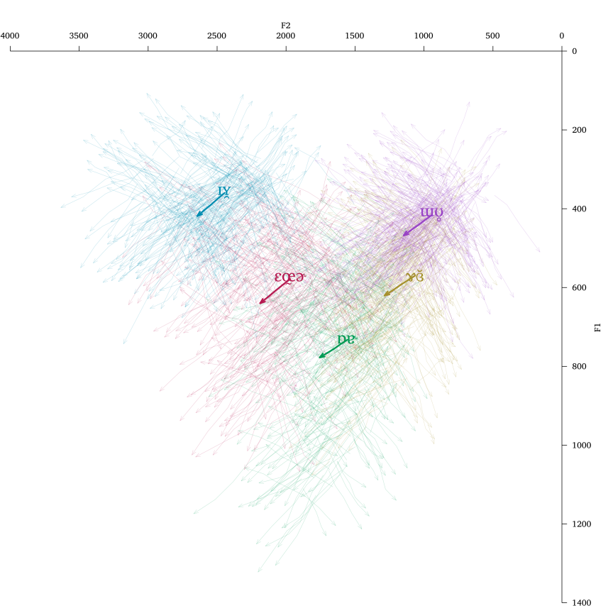
By default, plotVowels will only label the first point of each diphthong when pch.tokens or pch.means is specified (whether using symbols or text). If you want every timepoint along the line labeled, specify diph.label.first.only=FALSE. If you also specify diph.arrows=TRUE, the arrowheads will take precedence and diph.label.first.only=FALSE will cause all but the last timepoint of each vowel to be labeled.
If you want to plot polygons, ellipses, or hulls with your diphthong data, an additional argument diph.mean.timept allows you to specify which timepoint you want to use to calculate and draw those measures. The default is to use the first timepoint, but if (for example) you had measurements at 20%, 50%, and 80% through the duration of each vowel, you could specify diph.mean.timept=2 to base the mean calculations on the midpoint values.
Here are a few more worked examples, mostly based on emails from phonR users asking “how can I do...?”
Sometimes we need plots to be grayscale for print publication. Generally this is accomplished with the col argument, which will be recycled as necessary if it is shorter than the number of groups. R’s built-in color names for shades of gray come in handy here. The second plot also shows recycling of line types via the lty argument.
par(mfrow = c(1, 2))
with(indo, plotVowels(f1, f2, vowel, group = subj, var.col.by = subj, var.style.by = subj,
plot.tokens = FALSE, plot.means = TRUE, pch.means = vowel, cex.means = 2, pretty = TRUE,
poly.line = TRUE, poly.order = c("i", "e", "a", "o", "u"), legend.kwd = "bottomleft",
legend.args = list(seg.len = 3, cex = 1.2, lwd = 2), col = c("gray70", "gray40",
"gray10"), lty = c("solid", "solid", "dotdash", "dotdash", "dotted", "longdash",
"dashed", "dotted")))
with(indo, plotVowels(f1, f2, vowel, group = subj, var.col.by = subj, var.style.by = subj,
plot.tokens = FALSE, plot.means = TRUE, pch.means = vowel, cex.means = 2, pretty = TRUE,
poly.line = TRUE, poly.order = c("i", "e", "a", "o", "u"), legend.kwd = "bottomleft",
legend.args = list(seg.len = 3, cex = 1.2, lwd = 2), col = c("gray70", "black",
"gray40", "black"), lty = c("solid", "dashed", "dotted")))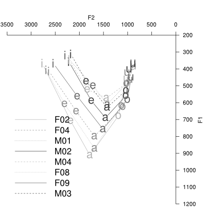
In some cases you may find it necessary to overlay two plotVowels plots. For example, you may want to plot just tokens and ellipses for one group of subjects, and overlay another group’s data with means and polygons. One way to accomplish this is to make a complete call to plotVowels, followed by par(new=TRUE), followed by the second call to plotVowels. This is usually fine as long as you explicitly pass the same values for pretty, xlim and ylim in both calls to plotVowels; otherwise the overplotted data will be on potentially different axis scales.
males <- indo[indo$gender %in% "m", ]
females <- indo[indo$gender %in% "f", ]
par(mfrow = c(1, 2))
# this is bad: note the different axis scales (colored differently for emphasis)
with(females, plotVowels(f1, f2, vowel, pretty = TRUE, alpha.tokens = 0.2, col = "red",
col.axis = "red"))
par(new = TRUE)
with(males, plotVowels(f1, f2, vowel, pretty = TRUE, alpha.tokens = 0.2, main = "BAD!",
sub = "different axis scales for the overlaid data sets"))
# this is okay: explicitly setting the axis scales to be equal.
with(females, plotVowels(f1, f2, vowel, pretty = TRUE, alpha.tokens = 0.2, col = "red",
col.axis = "red", xlim = c(3500, 500), ylim = c(1200, 200)))
par(new = TRUE)
with(males, plotVowels(f1, f2, vowel, pretty = TRUE, alpha.tokens = 0.2, xlim = c(3500,
500), ylim = c(1200, 200), main = "OKAY...", sub = "explicit xlim & ylim for both calls to plotVowels"))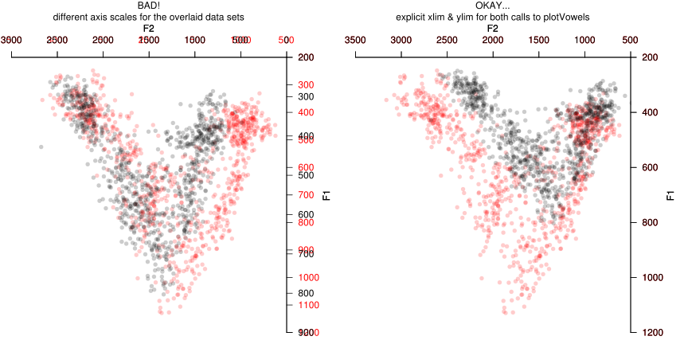
In such cases you can also pass axes=FALSE, ann=FALSE to one of the two calls to plotVowels to avoid drawing the axes and axis labels twice. However, this approach is somewhat dangerous, because it makes it easy to accidentally change the axis limits for one phase of the overplotting but not the other, and to not notice the mistake because the axes are not being drawn with one of the plotVowels calls. The danger can be somewhat mitigated by defining the axis limits externally to the function calls, e.g.:
xlim <- c(3500, 500)
ylim <- c(1200, 200)
with(females, plotVowels(f1, f2, vowel, pretty = TRUE, alpha.tokens = 0.2, col = "red",
col.axis = "red", xlim = xlim, ylim = ylim, axes = FALSE, ann = FALSE))
par(new = TRUE)
with(males, plotVowels(f1, f2, vowel, pretty = TRUE, alpha.tokens = 0.2, xlim = xlim,
ylim = ylim, main = "BEST?", sub = "just like the last plot, without the overplotted axes"))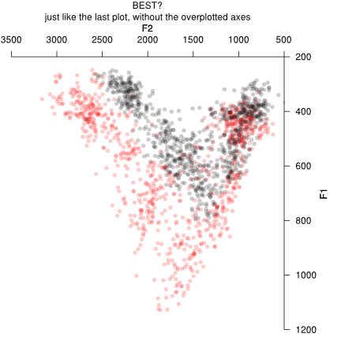
A different approach is to plot the overlay in a single call to plotVowels after pre-calculating things like color, plotting character to be used, etc. This will generally work for basic plots of tokens and means, but it doesn’t always work for ellipses, polygons, etc.
# pre-calculate colors (the [-1] at the end avoids duplicate hues 0 and 360)
hues <- seq(0, 360, length.out = length(unique(females$vowel)) + 1)[-1]
mycolors <- hcl(h = hues, c = 100, l = 60)
females$color <- mycolors[factor(females$vowel)]
males$color <- "gray30"
# plotting characters
mysymbols <- c("◍", "▷", "▱", "◘", "▢")
females$pch <- mysymbols[factor(females$vowel)]
males$pch <- "●" # solid circle
females$meanpch <- "♀" # female (venus) symbol
males$meanpch <- males$vowel
# token transparency
males$alph <- 0.2
females$alph <- 0.5
# character sizes
females$cex <- 1.2
males$cex <- 1.5
females$meancex <- 6
males$meancex <- 2.5
with(rbind(males, females), plotVowels(f1, f2, vowel, group = gender, col = color,
alpha.tokens = alph, pch.tokens = pch, cex.tokens = cex, plot.means = TRUE, pch.means = meanpch,
cex.means = meancex, var.col.by = NA, pretty = TRUE))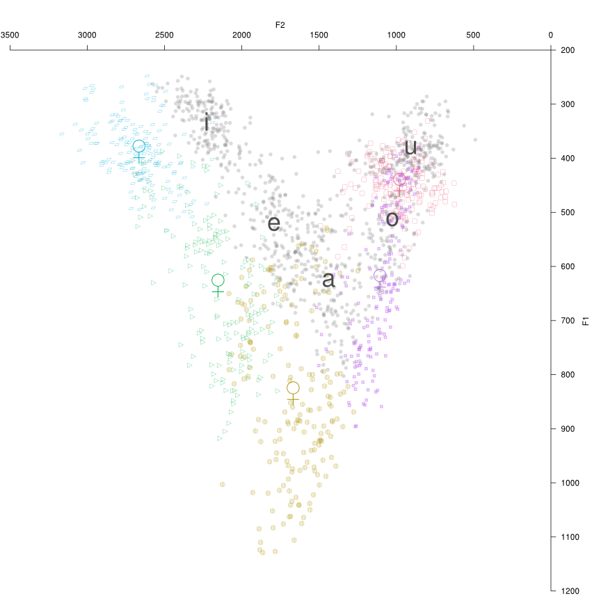
It would be quite a shame to put so much effort into creating beautiful vowel plots only to use crude ASCII shorthand on the plots to represent vowel quality, instead of proper IPA vowel symbols. There are a couple of good IPA character pickers out there (such as this one and this one) that make it easy to copy-and-paste any vowel symbol or diacritic you might need. There are even input methods that allow you to type unicode-compliant IPA symbols on a normal keyboard by using various control keys (see here). Given that these options exist and are free (and most are open-source), there is in my mind no longer any good reason to use ASCII shorthand on vowel plots.
Many R front-ends provide a GUI for capturing generated plots and saving them in different file formats. In many cases this works seamlessly, but in other cases it has been the case that custom fonts specified with the family argument are properly displayed on screen, but not when the plot window contents are saved to file. It is strongly recommended that you use phonR’s built-in capability to save direct-to-file when you want file output, rather than using plotVowels(..., output="screen") and then saving the plot from the GUI.
Gone are the days when the only unicode-compliant option for IPA transcription was the Doulos SIL typeface. Some of the plots above use Charis SIL, which (unlike Doulos SIL) has bold, italic, and bold-italic faces in addition to regular. In my experience Charis SIL aligns diacritics better than any of its competitors, but the following three fonts also have sufficiently respectable coverage of IPA codepoints to be usable in most documents concerning phonetics or phonology: M+, STIX, and Linux Libertine O (despite its name, Linux Libertine O will work on any operating system, not just Linux). All of these typefaces are free; M+ comes in an impressive range of weights and has both proportional and monospaced variants, and is the best sans-serif typeface I have found for rendering IPA glyphs.
Perhaps the easiest way to have a pleasant experience working with Unicode-compliant representations of IPA glyphs is to use a computer running a Linux operating system: R on Linux defaults to a UTF-8 locale, which means that non-ASCII glyphs can be displayed in the R command console (both in commands you type/paste in, and in R’s output) and can be used in plots without issue. Do not bother trying to get that to work on Windows by changing R’s locale parameter to UTF-8 on Windows. It will not work. If you want to be able to view and type non-ASCII characters in the R console, use Linux.
If you do use Windows, here are some key pieces of information that will allow you to work with Unicode IPA glyphs in R more easily. First: Microsoft Excel does not output UTF-8 encoded text files. If you try to save a spreadsheet from Excel as plain CSV, all the non-ASCII glyphs will be corrupted (i.e., each non-ASCII codepoint will be converted to a ? character). If you export from Excel as “Unicode text”, what you get is tab-separated values encoded in “UCS2-LE” format (AKA, “UTF-16 little-endian with BOM”). The easiest route to opening this in R is to first convert it to UTF-8 (e.g., with the “Encoding” menu in the free text editor Notepad++) and then read the data in R via read.delim(..., encoding="UTF-8"). To open “UCS-2LE” encoded files directly in R is a complicated process, but can be done; it involves reading in the file as raw text, splitting each line on the tab characters, collapsing the resulting list into a matrix using rbind, converting to a data frame, and finally manually converting any columns containing numeric or logical data to the proper mode. A sample of this method is given below:
header <- TRUE
textconnection <- file("my_ucs2_encoded_tab_delimited_file.txt", encoding = "UCS-2LE")
rawtext <- readLines(textconnection, encoding = "UCS-2LE")
close(textconnection)
splitlist <- sapply(rawtext, strsplit, "\t")
names(splitlist) <- NULL
if (header) {
mat <- do.call(rbind, splitlist[-1])
colnames(mat) <- splitlist[[1]]
} else {
mat <- do.call(rbind, splitlist)
}
df <- as.data.frame(mat, stringsAsFactors = FALSE)
# any numeric or logical columns will have to be manually converted, e.g.:
# df$nameOfNumericColumn <- as.numeric(df$nameOfNumericColumn)In either case, the non-ASCII characters will be rendered as “escaped” codepoints when the resulting dataframe is displayed in the R console (e.g., when using head() you will see <U+0259> instead of ə, because the Unicode address for ə is 0259). These escaped characters will usually display properly when plotted, as long as a suitable typeface is specified via the graphical parameter family. However, specifying fonts in R is more complicated under Windows than on other operating systems, as font names cannot be passed directly to family as a character string. Instead, you must first register the font using windowsFonts(myCustomFontName=windowsFont("Charis SIL")), and then reference the font as family="myCustomFontName" (you may of course substitute anything you like for myCustomFontName as long as there are no spaces in the name, and substitute your desired font’s name for "Charis SIL").
Many people bravely used the development version of phonR in the year leading up to its 1.0 release, and in the process discovered many bugs (and made many feature requests!), ultimately leading to a more polished and stable version of phonR to be released on CRAN. Thanks to Valerie Freeman, Cory Holland, Sophie Holmes-Elliott, Wendy Kempsell, Katharina Nimz, Jason Shaw, Shufang Xu, and most especially John Riebold.
Glasberg BR, & Moore BCJ (1990). Derivation of auditory filter shapes from notched-noise data. Hearing Research, 47(1-2), 103–138. doi:10.1016/0378-5955(90)90170-T
Kendall T, & Thomas ER (2009). Vowels: Vowel manipulation, normalization, and plotting in R. http://cran.r-project.org/web/packages/vowels/index.html
Libertine Open Fonts Projekt (2012). Linux Libertine. http://www.linuxlibertine.org/
Lobanov BM (1971). Classification of Russian vowels spoken by different speakers. The Journal of the Acoustical Society of America, 49(2), 606–608. doi:10.1121/1.1912396
Morishita C (2012). M+ Fonts. http://mplus-fonts.sourceforge.jp/
Nearey TM (1977). Phonetic feature systems for vowels (PhD thesis). University of Alberta, Edmonton.
R Development Core Team (2012). R: A language and environment for statistical computing. Vienna, Austria: R Foundation for Statistical Computing. http://www.R-project.org/
SIL International (2014). Charis SIL. http://scripts.sil.org/charissil_download
Stevens SS, & Volkmann J (1940). The relation of pitch to frequency: A revised scale. The American Journal of Psychology, 53(3), pp. 329–353.
STI Pub Companies (2014). Scientific and technical information exchange (STIX) fonts. http://www.stixfonts.org/
Thomas ER, & Kendall T (2007). NORM: The vowel normalization and plotting suite. http://ncslaap.lib.ncsu.edu/tools/norm/index.php
Traunmüller H (1990). Analytical expressions for the tonotopic sensory scale. The Journal of the Acoustical Society of America, 88(1), 97–100. doi:10.1121/1.399849
Watt D, & Fabricius AH (2002). Evaluation of a technique for improving the mapping of multiple speakers’ vowel spaces in the F1 ∼ F2 plane. (D. Nelson, Ed.)Leeds Working Papers in Linguistics and Phonetics, 9, 159–173.
Zeileis A, Hornik K, & Murrell P (2009). Escaping RGBland: Selecting colors for statistical graphics. Computational Statistics & Data Analysis, 53(9), 3259–3270. doi:10.1016/j.csda.2008.11.033